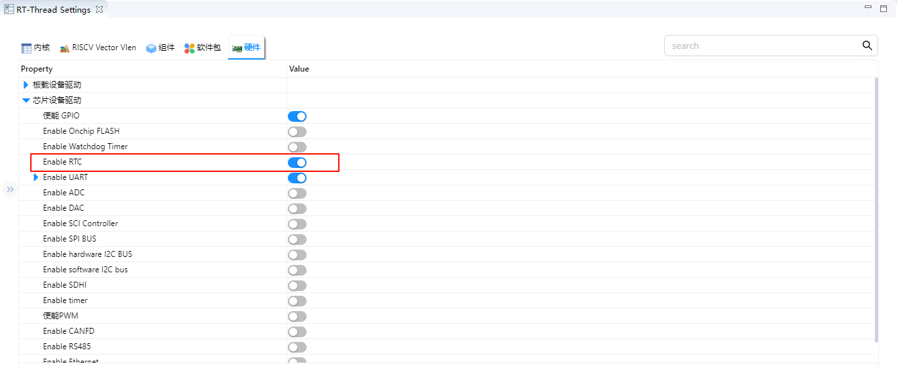
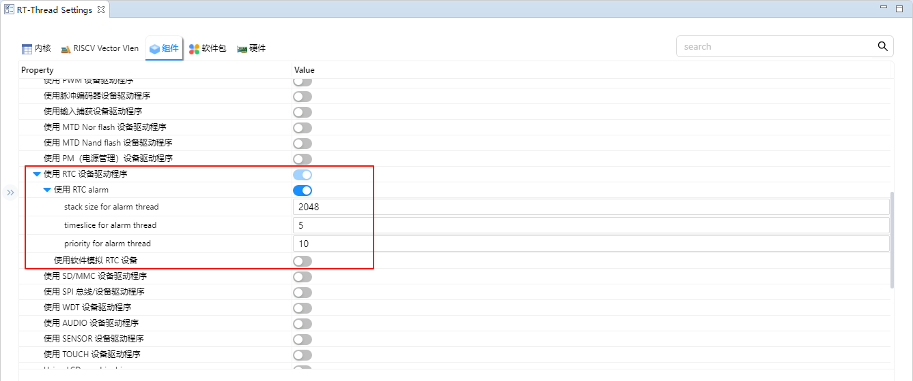
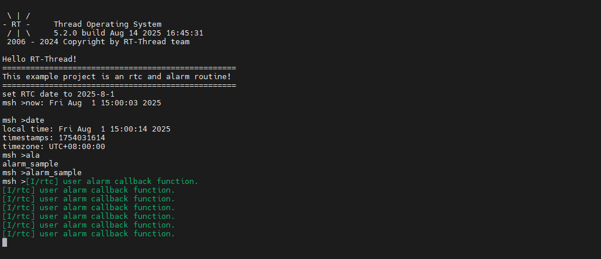
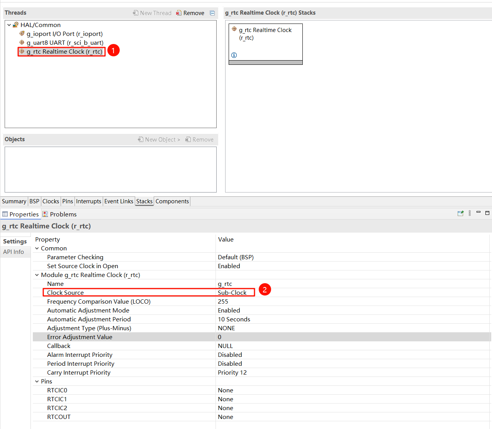
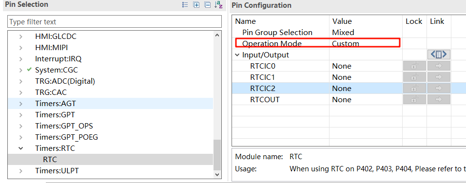

RTC and Alarm Example Usage Instructions
English|Chinese
Introduction
This example demonstrates how to use the RTC module of RA8 series MCU on the Titan Board, combined with the RT-Thread RTC driver framework, to implement basic real-time clock functions and alarm features. The RTC provides accurate real-time information, including year, month, day, hour, minute, and second. Most RTC chips use high-precision crystal oscillators as clock sources. Some chips are equipped with a battery to maintain time even when the main power is off.
The RTC device in RT-Thread provides fundamental time services for the operating system. In increasingly common IoT scenarios, RTC has become standard, and in applications such as SSL secure transmission, RTC is an essential component.
RTC (Real-Time Clock) Overview
1. Overview
RTC (Real-Time Clock) is an electronic module or chip used to measure and track actual time (year, month, day, hour, minute, second).
It is usually built into a microcontroller (MCU) or exists as a standalone chip, providing system time, timed wake-ups, and scheduled event triggers.
The core feature of an RTC is low power consumption and long-term stable operation. Even if the main power is off, the RTC can continue running via a backup power source (battery or supercapacitor).
2. Working Principle
An RTC is essentially a low-power oscillator + counter system:
Clock Source
Typically uses a 32.768 kHz quartz crystal (1 Hz = 2^15 cycles)
Provides a stable time base
Frequency Division & Counting
Divides the crystal frequency to generate 1 Hz pulses
Accumulates counts to generate minutes, hours, days, months, and years
Register Storage
Internal registers store current time, date, and alarm settings
Power Backup
Powered by an internal battery or supercapacitor to maintain time during main power loss
3. RTC Types
Internal RTC
Integrated into the MCU
Pros: Saves chip count, lower cost
Cons: Crystal accuracy affected by PCB layout and temperature
External RTC Chip
Standalone chips, e.g., DS3231, PCF8563
Pros: High precision, connects via I²C/SPI
Cons: Increases PCB area and cost
4. Key Parameters
Parameter |
Description |
|---|---|
Oscillator Freq |
Usually 32.768 kHz, low-power and stable |
Time Accuracy |
ppm / seconds per day, determines drift |
Supply Voltage |
1.8~5V, supports backup power |
Power Consumption |
1~5 µA (low-power mode) |
Interface Type |
I²C, SPI, or MCU internal bus |
Extended Features |
Alarm output, square wave, temperature compensation, wake-up timer |
5. RTC Functions
Real-Time Clock
Provides current time and date
Alarm
Configurable to trigger interrupts or wake the MCU at a specific time
Wake-up Timer
Can wake MCU from low-power mode
Temperature Compensation (for high-precision chips like DS3231)
Auto-calibrates crystal frequency to reduce drift
Square Wave Output
Provides fixed-frequency pulses to drive MCU timers or other modules
6. RTC Applications
Embedded Devices: System time tracking, event logging
Low-Power IoT Devices: RTC wakes MCU for periodic data collection
Watches and Wearables: Precise timekeeping
Data Loggers & Industrial Control: Timestamping, log recording
Automotive Electronics: Dashcams, in-car entertainment systems
RA8 Series RTC Module Overview
The RA8 MCU series includes a highly flexible RTC peripheral, suitable for low-power, high-precision embedded time management.
1. General Features
Time Management: Supports seconds, minutes, hours, day, month, year, and weekday
Clock Source:
External low-speed crystal (usually 32.768 kHz) for high precision
Internal low-speed RC oscillator for low power, slightly lower precision
Alarm: Supports single and repeating alarms with interrupt generation
Timers: Sub-second timers, periodic wake-up timers
Tamper Detection (Optional): Detects external tampering via configured pins
Low-Power Operation: RTC continues running in standby or sleep mode to maintain time during main power loss
2. RTC Module Architecture
RA8 RTC consists of the following functional modules:
Calendar Counter
Maintains current time and date
Supports 24-hour or 12-hour format
Automatically handles leap years
Alarm & Compare Unit
Compares current time with preset alarm value
Triggers interrupts on match
Supports repeating alarms (daily, hourly, etc.)
Clock Source & Divider
Divides external 32.768 kHz or internal RC oscillator to 1 Hz time base
Allows trade-off between accuracy and power consumption
Interrupt Controller
Supports alarm, periodic, and overflow interrupts
Configurable interrupt mask, enable, and status flags
Tamper & Backup Registers (Optional)
Non-volatile registers store data during power loss
Tamper pins can trigger interrupts for security applications
3. Key Features
Feature |
Description |
|---|---|
Time Resolution |
Second-level, optional sub-second counting |
Time Range |
Year, month, day, hour, minute, second |
Alarm |
Configurable, triggers interrupts |
Clock Source |
External 32.768 kHz crystal, internal RC oscillator |
Power Consumption |
Ultra-low, supports standby/sleep modes |
Interrupts |
Alarm, periodic, overflow |
Backup Registers |
Non-volatile, retains data during power loss |
Tamper Detection (Optional) |
External pin events can trigger interrupts |
4. Working Principle
Select Clock Source: external crystal or internal RC oscillator
Set Time: write initial date and time to calendar counter
Configure Alarm: set alarm time and enable interrupt
Interrupt Handling: MCU responds to alarm or periodic events via RTC interrupt flag
Power Management: RTC continues counting in low-power mode, ensuring accurate time
RT-Thread RTC Driver Framework
RT-Thread provides a unified RTC driver framework that abstracts the underlying hardware and provides standardized APIs for time management and alarm functions.
1. Key Interfaces
Function / Macro |
Description |
|---|---|
rt_device_find(“rtc”) |
Obtain RTC device handle |
rt_device_open(dev, flags) |
Open RTC device and initialize hardware |
rt_device_control(dev, cmd, args) |
Configure RTC: set/get time, configure alarm |
rt_device_read(dev, pos, buffer, size) |
Read current time or alarm status |
rt_device_write(dev, pos, buffer, size) |
Write time or alarm value |
rt_device_close(dev) |
Close RTC device |
2. Common rt_device_control Commands
Command |
Description |
|---|---|
RT_DEVICE_CTRL_RTC_SET_TIME |
Set current RTC time |
RT_DEVICE_CTRL_RTC_GET_TIME |
Get current RTC time |
RT_DEVICE_CTRL_RTC_SET_ALARM |
Set alarm time and enable interrupt |
RT_DEVICE_CTRL_RTC_GET_ALARM |
Get configured alarm time |
RT_DEVICE_CTRL_RTC_ENABLE |
Enable RTC |
RT_DEVICE_CTRL_RTC_DISABLE |
Disable RTC |
3. Alarm Handling
Configure alarm via
RT_DEVICE_CTRL_RTC_SET_ALARMEnable interrupt; MCU is notified when alarm triggers
ISR can update flags, trigger events, or wake low-power MCU
Hardware Description
The RTC device used in this example relies on the LOCO (Low speed On Chip Oscillator) clock. No other special connections are required.
FSP Configuration
Open the FSP configuration tool and select the
configuration.xmlfile under the corresponding project directory. Add the RTC Stack:

Next, configure the RTC parameters. Set the RTC stack name to
g_rtc, configure the RTC interrupt callback function tortc_callback, and set the interrupt callback priority:

RT-Thread Settings Configuration
Open RT-Thread Settings and enable the RTC under the hardware options:

Next, we configure the RTC. First, we need to enable the RT-Thread RTC device framework and enable the alarm function.

Example Code Description
The source code for this example is located at /src/hal_entry.c。
rt_err_t ret = RT_EOK;
time_t now;
rt_device_t device = RT_NULL;
device = rt_device_find(RTC_NAME);
if (!device)
{
rt_kprintf("find %s failed!\n", RTC_NAME);
}
if(rt_device_open(device, 0) != RT_EOK)
{
rt_kprintf("open %s failed!\n", RTC_NAME);
}
/* 设置日期 */
ret = set_date(2025, 8, 1);
rt_kprintf("set RTC date to 2025-8-1\n");
if (ret != RT_EOK)
{
rt_kprintf("set RTC date failed\n");
}
/* 设置时间 */
ret = set_time(15, 00, 00);
if (ret != RT_EOK)
{
rt_kprintf("set RTC time failed\n");
}
/* 延时3秒 */
rt_thread_mdelay(3000);
/* 获取时间 */
get_timestamp(&now);
rt_kprintf("now: %.*s", 25, ctime(&now));
The following code creates an RTC alarm and sets it to trigger in 1 second. Finally, the function is exported to the MSH command line.
void user_alarm_callback(rt_alarm_t alarm, time_t timestamp)
{
LOG_I("user alarm callback function.");
}
void alarm_sample(void)
{
rt_device_t dev = rt_device_find("rtc");
struct rt_alarm_setup setup;
struct rt_alarm * alarm = RT_NULL;
static time_t now;
struct tm p_tm;
if (alarm != RT_NULL)
return;
/* Get the current timestamp and set the alarm to trigger in the next second */
now = get_timestamp(NULL) + 1;
gmtime_r(&now,&p_tm);
setup.flag = RT_ALARM_SECOND;
setup.wktime.tm_year = p_tm.tm_year;
setup.wktime.tm_mon = p_tm.tm_mon;
setup.wktime.tm_mday = p_tm.tm_mday;
setup.wktime.tm_wday = p_tm.tm_wday;
setup.wktime.tm_hour = p_tm.tm_hour;
setup.wktime.tm_min = p_tm.tm_min;
setup.wktime.tm_sec = p_tm.tm_sec;
alarm = rt_alarm_create(user_alarm_callback, &setup);
if(RT_NULL != alarm)
{
rt_alarm_start(alarm);
}
}
/* export msh cmd */
MSH_CMD_EXPORT(alarm_sample,alarm sample);
Compilation & Download
RT-Thread Studio: In RT-Thread Studio’s package manager, download the Titan Board resource package, create a new project, and compile it.
After compilation, connect the development board’s USB-DBG interface to the PC and download the firmware to the development board.
Run Effect
Press the reset button to restart the development board, enter the alarm_sample command to run the alarm clock example, you can see the following message printed on the board:

Extension: RTC Operation During Power Loss
When the main power supply of the board is disconnected, if you want the RTC to keep running during power loss, you need to connect an external power source to the VBAT pin. Note that when VBAT supplies power to the RTC, only the Calendar counter will continue to run — other RTC functions will not be available. Below is a reference code example:
ps: If the RTC is expected to run during power loss, make sure that rtc_init is only initialized once. Afterwards, you can use rtc_get to obtain the current time.
#define RTC_YEAR_SET 2025
#define RTC_MON_SET 8
#define RTC_MDAY_SET 5
#define RTC_WDAY_SET (RTC_YEAR_SET-2000 \
+ ((RTC_YEAR_SET-2000)/4) \
- 35 + (26*(RTC_MON_SET+1))/10 \
+ RTC_MDAY_SET -1 )%7
#define RTC_HOUR_SET 12
#define RTC_SEC_SET 0
#define RTC_MIN_SET 0
void rtc_get()
{
rtc_time_t get_time;
R_RTC_CalendarTimeGet(g_rtc.p_ctrl, &get_time);
rt_kprintf ("%d-%d-%d-%d:%d:%d\r\n", get_time.tm_year + 1900, get_time.tm_mon + 1, get_time.tm_mday,
get_time.tm_hour, get_time.tm_min, get_time.tm_sec);
}
MSH_CMD_EXPORT(rtc_get, rtc_get);
void rtc_init(void)
{
rtc_time_t set_time =
{
.tm_min = RTC_MIN_SET,
.tm_hour = RTC_HOUR_SET,
.tm_mday = RTC_MDAY_SET,
.tm_wday = RTC_WDAY_SET,
.tm_mon = RTC_MON_SET - 1,
.tm_year = RTC_YEAR_SET-1900,
};
R_RTC_Open (g_rtc.p_ctrl, g_rtc.p_cfg);
R_RTC_CalendarTimeSet (g_rtc.p_ctrl, &set_time);
}
MSH_CMD_EXPORT(rtc_init, rtc_init);
FSP Configuration:

